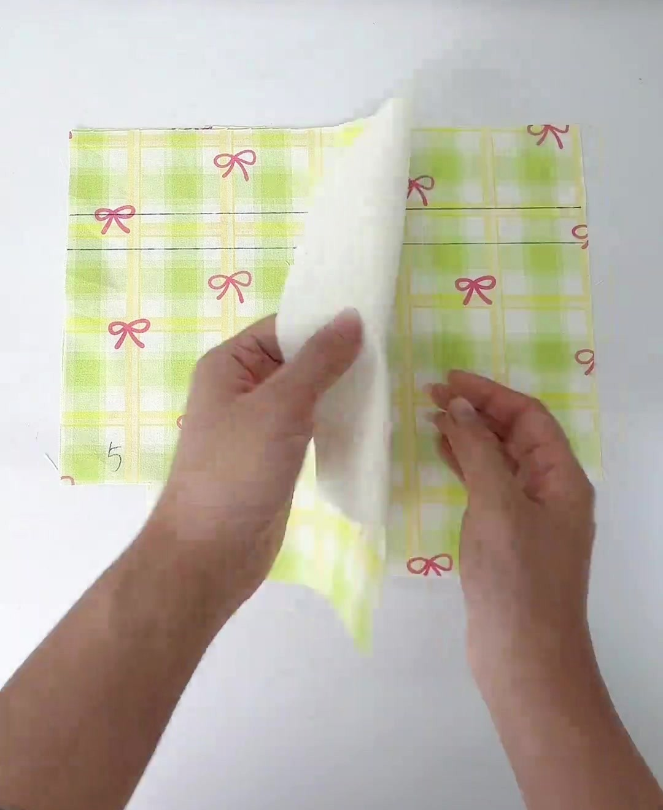
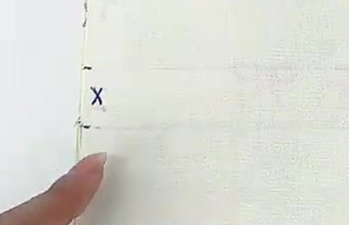

Video 0:06
Video 0:08- Úp & kẹp: 2 thân ngoài mặt phải vào nhau, canh trùng mép, kẹp 4 góc. (Lộn ra sau, mép vải nằm giấu bên trong.)
- Đánh dấu khe: ở 2 mép sườn (mặt trái), ngay 2 khấc 5 cm và 7 cm (Phần 5), vạch nét ngắn, đánh X ở giữa.
- May sườn 1 cách mép 1 cm: lại mũi ở mép trên, may tới vạch 5 cm → lại mũi (lùi–tới 3–4 mũi) → nhấc chân vịt, kéo vải qua 2 cm → hạ kim ở vạch 7 cm → lại mũi → may tới ô khoét, lại mũi. Cắt sợi chỉ vắt ngang khe.
- May đáy 2, rồi sườn 3 y hệt sườn 1.
- Ủi rẽ cả 3 đường may: tách 2 mép vải thừa sang 2 bên rồi ủi phẳng (hình mặt cắt), kỹ nhất quanh khe dây.
Kiểm tra
- 2 khe cùng cao độ (5 → 7 cm).
- Mỗi khe đúng 2 cm, lại mũi chắc.
- Bút chì lọt qua khe dễ dàng.
Trong video
“Úp mặt phải vào nhau may 3 cạnh, chỗ kẻ vạch không may.” Hở ở cả 2 sườn.
Lỗi hay gặp
Quên lại mũi 2 đầu khe → khe toạc khi rút dây. May dính khe → không luồn được dây.
Có cần vắt sổ không?
Không bắt buộc — túi có lót kín, mép vải giấu bên trong. Vải rất tưa: zigzag mép trước khi ráp (Phần 5).